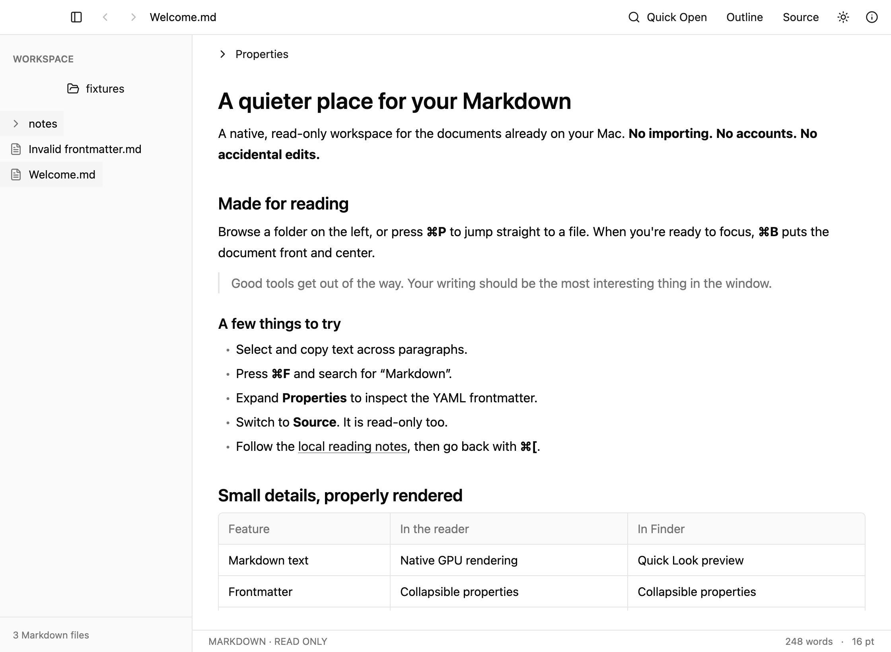
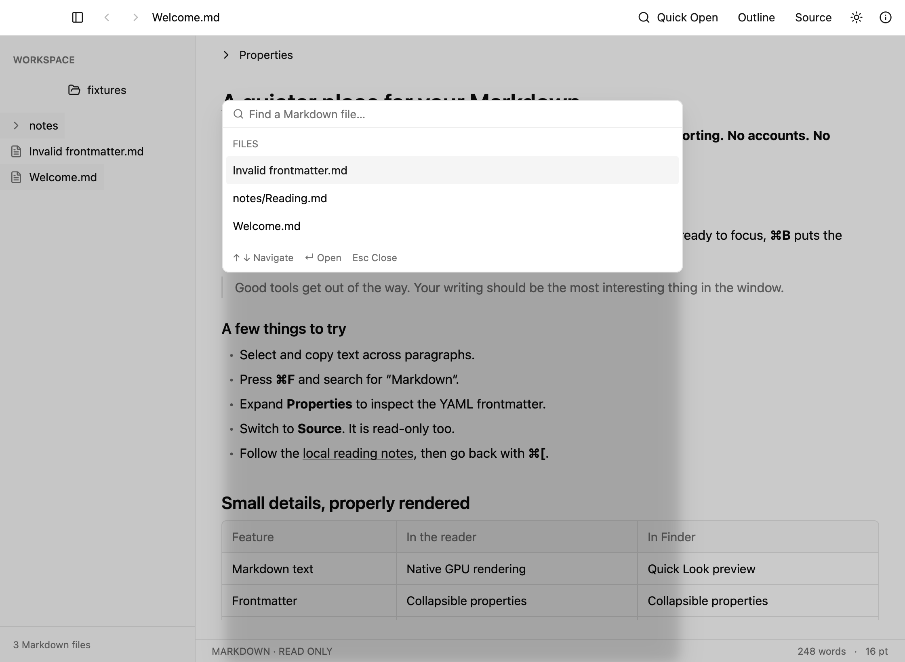
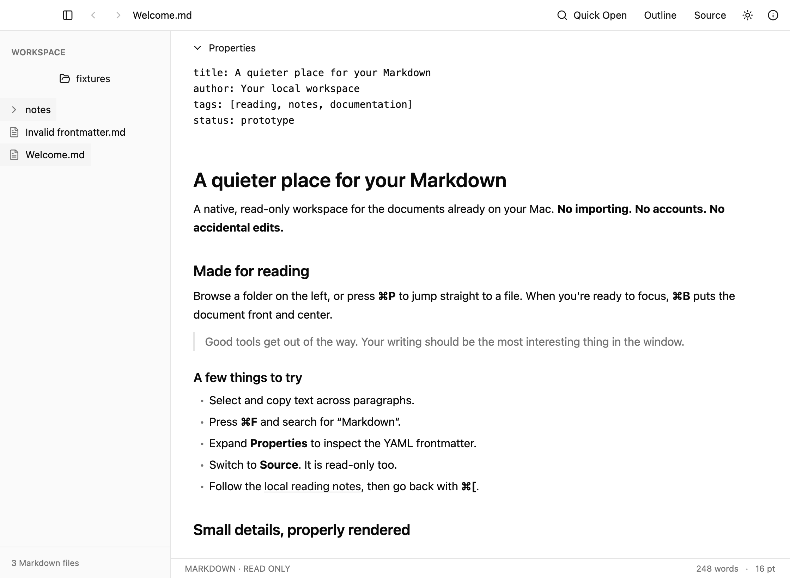

No browser overhead.
Rust and GPUI render selectable text, tables, task lists, code, footnotes and local images directly on the GPU.
Made for Mac. Free & open source.
A native, read-only reader for the documents already on your Mac.
No importing, no accounts, no accidental edits.
macOS 13+ Apple Silicon & Intel Works offline

BUILT FOR READING
GPU-rendered text. No web view or Electron.
Your files are never modified.
Rust and GPUI render selectable text, tables, task lists, code, footnotes and local images directly on the GPU.
Even Source view is read-only. Files reload automatically when they change on disk.
A bundled Quick Look extension shows an offline rendered preview of any Markdown file.
Press ⌘ P to filter every Markdown file in your folder, or use the folder tree and arrow keys.

YAML frontmatter lives in a collapsible Properties panel. ⌘ F finds against the rendered text, and ⇧⌘ L opens a heading outline.

FREE & OPEN SOURCE
There are no notarized releases yet, so build from source. You need Rust and Xcode or the Command Line Tools.
git clone https://github.com/bryaneaton13/markdown-viewer.git
cd markdown-viewer
scripts/bundle.sh --release --install
open "$HOME/Applications/Markdown Viewer.app"The build is ad-hoc signed, so it runs only on the machine that built it. Full instructions ↗